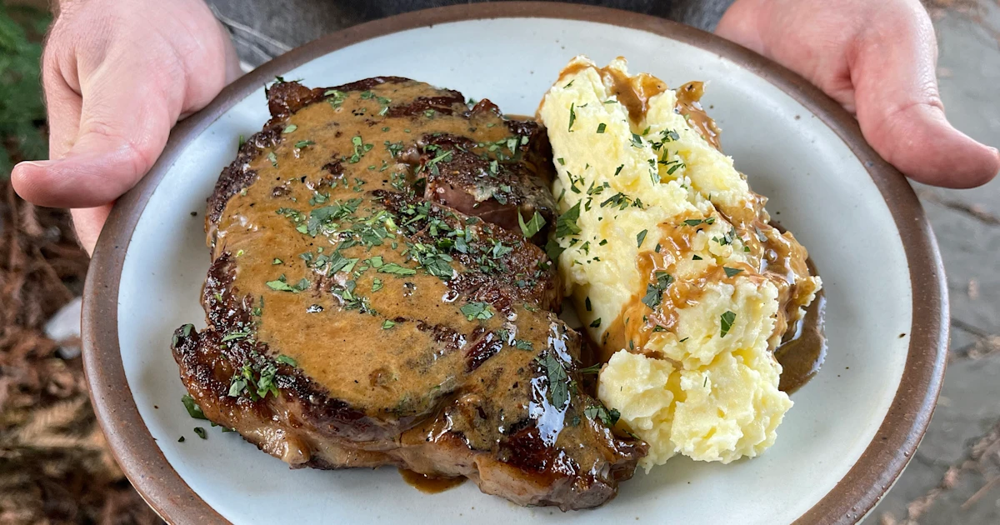

>
Steak Meal

Description
Generally, people appreciate meat over chicken
The epitomy of meat may be steak
So today, we'll be mixing steak with some mashed potatoes.
Ingredients
- 250 grams of steak
- 2 Potatoes
- Olive oil
- Salt
- Pepper
- Steak sauce
Steps
- Boil peeled potatoes in pot for 30 minutes
- Mash potatoes and put aside
- Marinate steak in olive oil
- Add salt and pepper to entire surface of steak
- Cook steak on stove for 8 minutes, flipping once halfway through
- Place steak on plate with mashe potatoes
- Serve with steak sauce
This is the end of the series for now
Cook on man